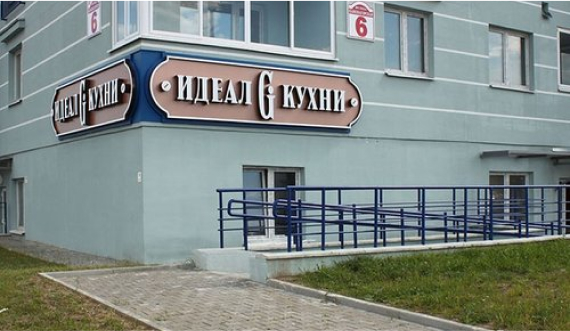
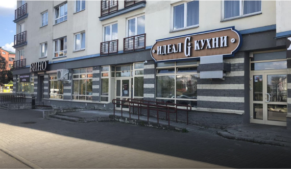

г. Минск, ул. Стариновская, д. 2
Уручье
пн-пт: 10:00 - 20:00
сб, вс: 10:00 - 17:00
Материалы в наличии: Арли, Натали, Маринара, Руна, Капри, Калипсо, Эри, Симона,
Дамиана

ПОДРОБНЕЕ

ПОДРОБНЕЕ
г. Минск, ул. Стариновская, д. 2
Уручье
пн-пт: 10:00 - 20:00
сб, вс: 10:00 - 17:00
Материалы в наличии: Арли, Натали, Маринара, Руна, Капри, Калипсо, Эри, Симона,
Дамиана
Если Вы хотите купить кухню из дерева, пластика или акрила, рекомендуем обратить свое внимание на продукцию фабрики GeosIdeal. Фабричные кухни выполнены в современном дизайне, а качество позволяет пользоваться продукцией долгие годы.
Кухни от производителя из массива дерева, акрила или пластика обеспечат максимальный комфорт в эксплуатации, а их внешний вид будет ежедневно поднимать Ваше настроение.
Фабрика реализует продукцию в фирменных салонах «Идеал Кухни» в Витебске, Минске, Бресте. В каждом салоне Вам бесплатно создадут дизайн-проект, рассчитают стоимость кухни, помогут с выбором фурнитуры, мойки, встроенной техники и сопутствующих аксессуаров.